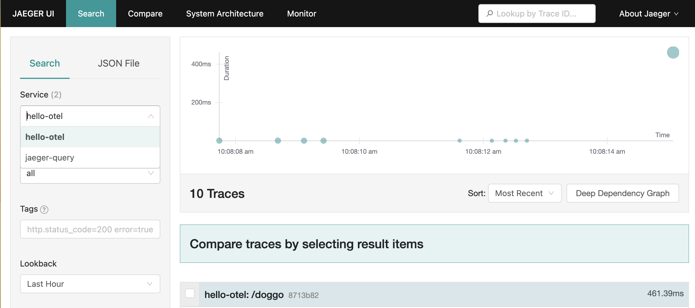
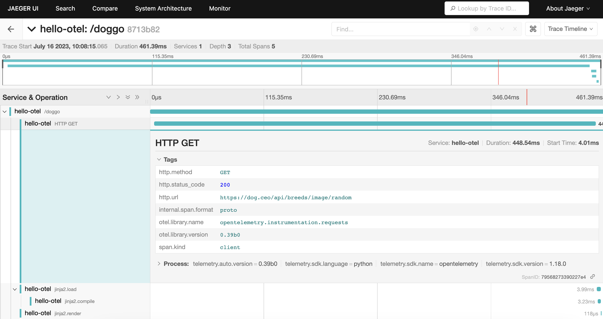

Lab 3 - Programmatic Instrumentation
Lab Goal
This lab walks you through programmatically instrumenting the demo application with OpenTelemetry libraries, and viewing trace data in Jaeger.
Programmatic - Choose your runtime
This lab builds the demo application image with Podman, then runs it to view traces. You can
run it directly with Podman as shown on the following slides, or deploy it to a local Rancher
Desktop k3s cluster instead:
- Continue onwards to run the container with Podman
- Continue to run using Kubernetes (k3s)
Finding Available Instrumentation Libraries
A quick way to find what OpenTelemetry instrumentation is available for your application is to
use opentelemetry-bootstrap!
Note: In a later lab from this workshop we'll explore another way by searching through the OpenTelemetry Registry
Note: In a later lab from this workshop we'll explore another way by searching through the OpenTelemetry Registry
Listing Available Instrumentation Libraries
Earlier we used opentelemetry-bootstrap to both detect and install libraries - by modifying the
command we can skip installing, and list available libraries instead.Try it out yourself and
verify the output below:
$ podman run -it hello-otel:auto opentelemetry-bootstrap -a requirements
opentelemetry-instrumentation-asyncio==0.65b0
opentelemetry-instrumentation-dbapi==0.65b0
opentelemetry-instrumentation-exceptions==0.65b0
opentelemetry-instrumentation-logging==0.65b0
opentelemetry-instrumentation-sqlite3==0.65b0
opentelemetry-instrumentation-threading==0.65b0
opentelemetry-instrumentation-urllib==0.65b0
opentelemetry-instrumentation-wsgi==0.65b0
opentelemetry-instrumentation-click==0.65b0
opentelemetry-instrumentation-flask==0.65b0
opentelemetry-instrumentation-grpc==0.65b0
opentelemetry-instrumentation-jinja2==0.65b0
opentelemetry-instrumentation-requests==0.65b0
opentelemetry-instrumentation-urllib3==0.65b0
Reviewing Available Instrumentation Libraries
There are several detected that are unnecessary because they instrument a Flask feature that
isn't used in the demo app like handling async requests, or instrumenting a very simple use case
like urllib3 which is used in a straightforward URL parsing function.
After removing the unneeded libraries from the list, here is what we need to install and configure:
After removing the unneeded libraries from the list, here is what we need to install and configure:
- opentelemetry-instrumentation-flask - traces web requests made to the application
- opentelemetry-instrumentation-jinja2 - traces the template loading, compilation and rendering
- opentelemetry-instrumentation-requests - traces HTTP requests made by the requests library
Programmatic - Installing the libraries
Open the file
programmatic/Buildfile-prog and add the lines shown to install
the API, SDK and the library instrumentation:
FROM python:3.13-bullseye
WORKDIR /app
COPY requirements.txt requirements.txt
RUN pip install -r requirements.txt
RUN pip install opentelemetry-api==1.44.0 \
opentelemetry-sdk==1.44.0 \
opentelemetry-instrumentation-flask==0.65b0 \
opentelemetry-instrumentation-jinja2==0.65b0 \
opentelemetry-instrumentation-requests==0.65b0
COPY . .
CMD [ "flask", "run", "--host=0.0.0.0"]
Programmatic - Configure SDK
To create, manage and export spans with OpenTelemetry there are 3 components to configure:
- Tracer Provider - constructor method that returns a tracer that creates, manages and sends spans
- Processor - hooks into ended spans, options to send spans as soon as they end or in a batch
- Exporter - responsible for sending spans to the configured destination
Programmatic - Import API, SDK
Open the file
programmatic/app.py and import the OpenTelemetry API and SDK:
import random
import re
import urllib3
import requests
from flask import Flask, render_template, request
from breeds import breeds
from opentelemetry.trace import set_tracer_provider
from opentelemetry.sdk.trace import TracerProvider
from opentelemetry.sdk.trace.export import SimpleSpanProcessor, ConsoleSpanExporter
Programmatic - Configure tracer
In the same file
programmatic/app.py a bit father down, create a
TracerProvider configured to send spans as they finish to the console:
...
from opentelemetry.sdk.trace.export import SimpleSpanProcessor, ConsoleSpanExporter
provider = TracerProvider()
processor = SimpleSpanProcessor(ConsoleSpanExporter())
provider.add_span_processor(processor)
set_tracer_provider(provider)
Programmatic - Import instrumentation libraries
Next we insert the imports needed for
flask, jinja2, and
requests instrumentation libraries above the section we just created:
import requests
from flask import Flask, render_template, request
from breeds import breeds
from opentelemetry.trace import set_tracer_provider
from opentelemetry.sdk.trace import TracerProvider
from opentelemetry.sdk.trace.export import SimpleSpanProcessor, ConsoleSpanExporter
from opentelemetry.instrumentation.flask import FlaskInstrumentor
from opentelemetry.instrumentation.jinja2 import Jinja2Instrumentor
from opentelemetry.instrumentation.requests import RequestsInstrumentor
provider = TracerProvider()
processor = SimpleSpanProcessor(ConsoleSpanExporter())
provider.add_span_processor(processor)
set_tracer_provider(provider)
Programmatic - Configure instrumentation
The last step is to configure the programmatic instrumentation for each component in the
application. This is done by creating an instance of the
FlaskInstrumentor,
the Jinja2Instrumentor, and RequestsInstrumentor in the
section of our file as shown:
provider = TracerProvider()
processor = SimpleSpanProcessor(ConsoleSpanExporter())
provider.add_span_processor(processor)
set_tracer_provider(provider)
app = Flask(__name__)
FlaskInstrumentor().instrument_app(app)
Jinja2Instrumentor().instrument()
RequestsInstrumentor().instrument()
Programmatic - Build image
Run this in the console to build the image
$ podman build -t hello-otel:prog -f programmatic/Buildfile-prog
Verify you get a success message in the console like below:
...
Successfully tagged localhost/hello-otel:prog \
495118b9c78178356fc0cbd05d244e387f3fdc379b1b5c873e76b1cb41b82ef5
Programmatic - Run the container
Enter this command in the console to run the container:
$ podman run -i -p 8001:8000 -e FLASK_RUN_PORT=8000 hello-otel:prog
Programmatic - Verify instrumentation
Open a browser and make a request to an endpoint like
http://localhost:8001 and confirm spans
are printed to the console like below (scroll to view code):
{
"name": "GET /",
"context": {
"trace_id": "0x2252ac9904b75df4d307c38fed8fdf20",
"span_id": "0xe4f4143485a93679",
"trace_state": "[]"
},
"kind": "SpanKind.SERVER",
"parent_id": null,
"start_time": "2026-08-12T15:56:09.960050Z",
"end_time": "2026-08-12T15:56:09.961119Z",
"status": {
"status_code": "UNSET"
},
"attributes": {
"http.method": "GET",
"http.server_name": "0.0.0.0",
"http.scheme": "http",
"net.host.name": "localhost:8001",
"http.host": "localhost:8001",
"net.host.port": 8000,
"http.target": "/",
"net.peer.ip": "10.88.0.3",
"net.peer.port": 50090,
"http.user_agent": "Mozilla/5.0 (Macintosh; Intel Mac OS X 10_15_7) AppleWebKit/537.36 (KHTML, like Gecko)...",
"http.flavor": "1.1",
"http.route": "/",
"http.status_code": 200
},
"events": [],
"links": [],
"resource": {
"attributes": {
"telemetry.sdk.language": "python",
"telemetry.sdk.name": "opentelemetry",
"telemetry.sdk.version": "1.44.0",
"service.instance.id": "18efdeaf-36b1-4898-a35a-4bd95ce5c3f0",
"service.name": "unknown_service"
},
"schema_url": ""
}
}
Programmatic - Stop the container
Let's stop the container we are currently running to add some visualization tooling for our
telemetry data by entering CTRL-C in the console.
Programmatic - Adding the Jaeger UI
Scrolling through spans in the console is overwhelming, let's add some visualizations with Jaeger!
With the
With the
OTLPSpanExporter, the application can send finished spans directly to
Jaeger native OTLP endpoint.
Programmatic - Installing the OTLP exporter
Open the file
programmatic/Buildfile-prog and add a line to install the
OTLP Exporter library:
FROM python:3.13-bullseye
WORKDIR /app
COPY requirements.txt requirements.txt
RUN pip install -r requirements.txt
RUN pip install opentelemetry-api==1.44.0 \
opentelemetry-sdk==1.44.0 \
opentelemetry-exporter-otlp==1.44.0 \
opentelemetry-instrumentation-flask==0.65b0 \
opentelemetry-instrumentation-jinja2==0.65b0 \
opentelemetry-instrumentation-requests==0.65b0
COPY . .
CMD [ "flask", "run", "--host=0.0.0.0"]
Programmatic - Configure OTLP exporter
Next we open the
programmatic/app.py file and import the OTLP exporter
library and swap the console exporter for OTLP:
from opentelemetry.trace import set_tracer_provider
from opentelemetry.sdk.trace import TracerProvider
from opentelemetry.sdk.trace.export import SimpleSpanProcessor
from opentelemetry.exporter.otlp.proto.http.trace_exporter import OTLPSpanExporter
provider = TracerProvider()
processor = SimpleSpanProcessor(OTLPSpanExporter())
provider.add_span_processor(processor)
set_tracer_provider(provider)
app = Flask(__name__)
FlaskInstrumentor().instrument_app(app)
Jinja2Instrumentor().instrument()
RequestsInstrumentor().instrument()
Programmatic - Build OTPLSpanExporter image
After saving the file, run this in the console to build the new image:
$ podman build -t hello-otel:prog -f programmatic/Buildfile-prog
Verify you get a success message in the console like below:
...
Successfully tagged localhost/hello-otel:prog \
495118b9c78178356fc0cbd05d244e387f3fdc379b1b5c873e76b1cb41b82ef5
Programmatic - Review pod definition
Next open the file
programmatic/app_pod.yaml and review it. The application
container exposes containerPort 5000 (the Flask default, no FLASK_RUN_PORT
is set here) mapped to hostPort 8001. In the Jaeger section note the ports; 16686 and
4318. The first is for the Jaeger UI and the second is for telemetry data sent via OTLP:
- name: hello-otel
image: localhost/hello-otel:prog
...
ports:
- containerPort: 5000
hostPort: 8001
- name: jaeger-all-in-one
image: jaegertracing/all-in-one:1.76.0
resources:
limits:
memory: "128Mi"
cpu: "500m"
ports:
- containerPort: 16686
hostPort: 16686
- containerPort: 4318
env:
- name: COLLECTOR_OTLP_ENABLED
value: "true"
- name: OTEL_TRACES_EXPORTER
value: "otlp"
Programmatic - Run the pod
Run the sample application and Jaeger containers in a Pod
$ podman play kube programmatic/app_pod.yaml
Verify you get a success message in the console like below:
Pod:
0bc7dbf0bf9802c3324630d42a2109b93055d0f6b3c0ee2c83d55f954e56643a
Containers:
bd176546950d48ea01d6bde2fa08f5bea81fb62e279856016b90053016409499
5b9a521a8408d549fed9fff85b07333a6b5e772224d6bda257d834f416966729
Programmatic - Verify Jaeger UI
Open browser to http://localhost:16686.
You should see a screen like below with a Gopher detective:

Programmatic - Verify OTLP span export
Open a browser and make several requests to the
/doggo endpoint. This should emit
traces with spans from each instrumentation library:
- Flask spans representing requests to the app
- Requests spans for the external request to Dog API
- Jinja2 spans for HTML template compilation
Programmatic - Verify OTLP span export
Back in our Jaeger UI, select hello-otel from the service dropdown. Confirm
that you see traces returned for the operation GET /doggo:

Programmatic - Viewing a trace waterfall
Select one of the traces by clicking the span name and confirm you see a trace waterfall like
this:

Lab completed - Results
We installed and configured OpenTelemetry SDK programmatically in the demo application and successfully
sent and viewed traces in Jaeger.
Leave pod running, next up is exploring trace data in Jaeger!